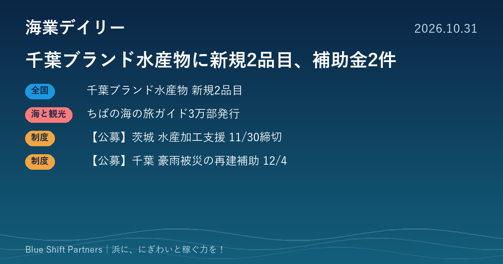

2026.10.31
千葉ブランド水産物に新規2品目、補助金2件

千葉県が「千葉ブランド水産物」の今年度認定を発表し、銚子市と鋸南町の漁協の2品目が新たに加わりました。県は令和9年秋の全国豊かな海づくり大会に向けて、海の旅ガイドブックも発行します。茨城・千葉では、浜の事業者が使える補助金の受付も始まっています。
千葉ブランド水産物、今年度は10品目を認定（新規2品目）
千葉県は10月29日、令和8年度の「千葉ブランド水産物」として10品目（新規2、再認定8）を認定したと発表しました。新規は銚子市漁協の「銚子港生まぐろ」と、鋸南町勝山漁協の「布良瀬一本釣くろむつ」です。認定品は累計38品目となり、11月1日には銚子漁港第3卸売市場で開かれる「豊かな海づくりフェスタ」の中で認定書の交付式が行われます。
ここがポイント：ブランド認定は、直売所や食堂のメニュー、ふるさと納税の返礼品で産地の価値を伝える材料になります。漁協と地元の飲食・宿泊が組んで「認定品を食べられる浜」として打ち出す使い方が考えられます。
出典：千葉県 農林水産部水産課「令和8年度千葉ブランド水産物の認定について」（2026-10-29）
千葉県、「ことりっぷ」と組んだ海の旅ガイドブックを発行
千葉県は10月29日、旅行ガイド「ことりっぷ」を活用したガイドブック「ちばの海 いろんな「あお」をめぐる旅」を3万部発行すると発表しました。県内を5つのエリアに分け、海辺の風景や食、文化、マリンレジャーなどを紹介し、漁師の祝着「万祝」も取り上げています。観光施設や道の駅、サービスエリアなどで無料配布する予定で、電子ブックでも読めます。
ここがポイント：令和9年秋の全国豊かな海づくり大会に向けて、県が「海」を軸に旅行者を呼び込む動きです。浜の食堂や体験事業者は、ガイドに載ったエリアの流れに合わせて、受け入れの案内やSNSでの発信を準備しておくとよいでしょう。
出典：千葉県 環境生活部文化振興課「「ことりっぷ」を活用したちばの海のガイドブック発行について」（2026-10-29）
【公募】茨城県 水産加工業緊急支援事業（3つの補助金）11/30締切
茨城県は、県内に水産加工場を持つ中小規模の水産加工業者を対象に、①代替魚種への転換や高付加価値商品の開発、②排水処理施設の整備・改修、③加工原材料の高騰分の経費を補助する3つの補助金を募集しています。受付は10月20日から11月30日17時まで（③は第2次・第3次の募集あり）で、いばらき電子申請・届出サービスまたは書面で申請します。補助率と上限額は県のページに記載がなく、公募要領で確認する必要があります。申請額が予算に達した時点で受付終了となります。
ここがポイント：不漁や原材料高で原料を切り替えたい加工業者にとって、新商品の開発費や排水設備の更新に充てられる制度です。予算に達し次第締め切られるため、検討中の事業者は早めに公募要領を確かめることをおすすめします。
出典：茨城県 農林水産部漁政課「水産加工業緊急支援事業」（2026-10-26）
【公募】千葉県 被災小規模事業者再建支援事業補助金 12/4締切（1回目）
千葉県は、令和8年8月千葉豪雨（8月13〜14日）で被災した県内の小規模事業者を対象に、事業再建の費用を補助します。対象経費は施設修繕費・機械装置費・設備廃棄費で、補助率は2/3以内、上限100万円（下限10万円）です。受付は11月6日に始まり、1回目の締切は12月4日17時（2回目は令和9年1月中旬の予定）で、電子申請または郵送で申請します。罹災証明書などが必要で、申請には商工会・商工会議所の支援を受けることが条件です。
ここがポイント：豪雨で冷蔵庫や調理設備、店舗が傷んだ浜の食堂・直売所・加工場などが、修繕や機械の入れ替えに使えます。被災日以降の経費が遡って対象になるため、すでに修繕を済ませた事業者も地元の商工会・商工会議所に相談してみてください。
出典：千葉県 商工労働部経済政策課「千葉県被災小規模事業者再建支援事業補助金の申請受付開始について」（2026-10-30）
今日の4件は、どれも千葉・茨城の県が出した情報です。ブランド認定と海の旅ガイドは、令和9年秋の全国豊かな海づくり大会に向けて「千葉の海」に光が当たる流れの一部で、浜の側が受け皿を用意できるかが稼ぐ力の分かれ目になります。補助金は締切と予算枠があるので、使えそうなものは早めに商工会や県の窓口に当たってみてください。